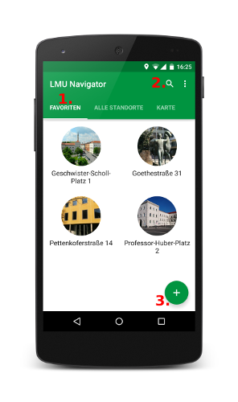
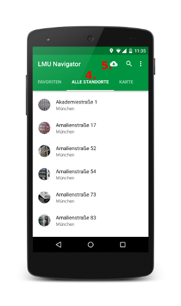
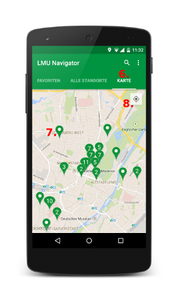
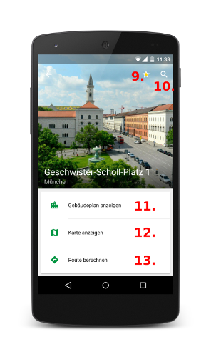
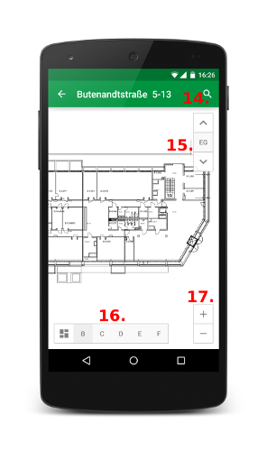

App Übersicht
Bei der App wurde auf eine einfache Benutzeroberfläche und intuitive Navigation geachtet. Zum Start wird die Favoriten-Seite angezeigt, damit Du möglichst schnell Dein gewünschtes Gebäude erreichst. Im folgenden werden die wichtigsten Elemente der App erklärt:

1. Im Favoriten-Tab werden Dir alle Standorte angezeigt, die Du als Favorit markiert hast.
2. Klicke auf die Lupe, um nach einem Standort der LMU zu suchen.
3. Klicke auf den Plus-Button, um einen Favoriten hinzuzufügen.

4. Im Alle-Standorte-Tab findest Du die Liste mit allen Gebäuden der LMU auf einen Blick.
5. Falls ein Daten-Update verfügbar ist, kannst Du den Download über den Wolken-Button starten.

6. Im Karte-Tab werden Dir alle Gebäude der LMU auf einer Karte angezeigt.
7. Klicke auf einen Marker und Du siehst zunächst die zugehörige Adresse in einem Info-Window. Klicke anschließend auf das Info-Window, um das Gebäude auszuwählen.
8. Klicke auf den Button in der Ecke, um zu Deiner eigenen Position zu springen.

9. Klicke auf den Stern, um den ausgewählten Standort als Favorit zu speichern, bzw. zu entfernen.
10. Klicke auf die Lupe, um die Räume des Standortes zu durchsuchen.
11. Lasse Dir den Gebäudeplan des Standortes anzeigen.
12. Öffne die Adresse des Standortes in Google Maps.
13. Lasse Dir mit Google Maps eine Route zu dem Gebäude berechnen.

14. Klicke auf die Lupe, um die Räume des Gebäudes zu durchsuchen.
15. Wechsle das angezeigte Stockwerk mit den Pfeil-Buttons oder klicke auf den Button mit dem aktuellen Stockwerk, um eine Liste aller Stockwerke angezeigt zu bekommen.
16. Wähle hier aus den verschiedenen Gebäudeteilen des Standortes.
17. Passe hier die Zoom-Stufe an. Finger-Gesten werden jedoch auch unterstützt.